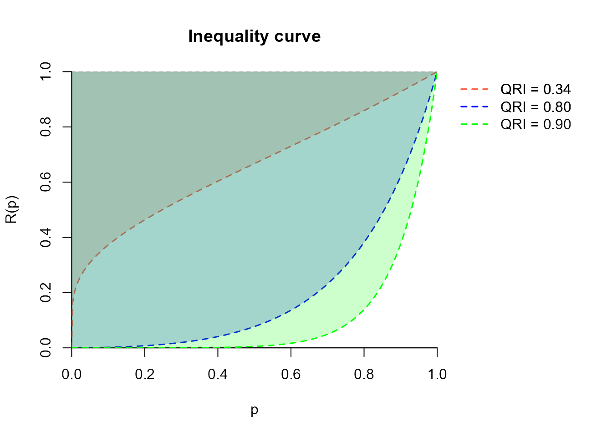
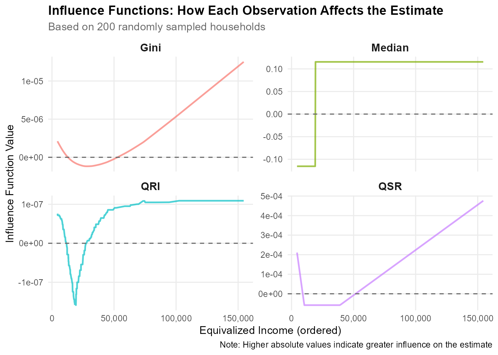

inequantiles-intro.RmdThe inequantiles package provides tools for estimating quantiles and quantile-based economic inequality indicators from survey data, with full support for complex sampling designs.
The core of the inequantiles package is the quantile ratio index (QRI), an indicator that provides a comprehensive and robust measure of inequality by considering the entire distribution. Unlike the Gini coefficient, which is highly sensitive to large values in the long tails, the QRI is based solely on quantiles, making it remarkably resistant to anomalous observations and high skewness, even in small samples.
The package offers comprehensive methods for:
All functions are demonstrated using synthetic survey data included in the package.
# Install from GitHub
devtools::install_github("silviascarpa/inequantiles")
library(inequantiles)The dataset synthhouse was synthetically generated to mimic tipical survey dataset like Italian EU-SILC. It contains basic information at the individual and household level, including equivalized disposable income.
data(synthouse)
head(synthouse)
#> person_id hh_id NUTS1 NUTS2 NUTS3 municipality age age_class gender
#> 1 HH000001P1 HH000001 N N01 N01005 N010050010 39 35-49 1
#> 2 HH000001P2 HH000001 N N01 N01005 N010050010 38 35-49 2
#> 3 HH000001P3 HH000001 N N01 N01005 N010050010 15 15-17 1
#> 4 HH000001P4 HH000001 N N01 N01005 N010050010 13 0-14 2
#> 5 HH000002P1 HH000002 NE NE06 NE06004 NE060040007 37 35-49 2
#> 6 HH000003P1 HH000003 N N05 N05003 N050030007 54 50-64 2
#> education_level employment_status hh_size hh_type eq_income hh_income
#> 1 Low Employed 4 Family 10430.70 23990.61
#> 2 Medium Employed 4 Family 10430.70 23990.61
#> 3 <NA> Student 4 Family 10430.70 23990.61
#> 4 <NA> Student 4 Family 10430.70 23990.61
#> 5 Medium Employed 1 Single 36588.27 36588.27
#> 6 Low Employed 2 Couple 13390.50 20085.75
#> oecd_scale weight
#> 1 2.3 83.66134
#> 2 2.3 83.66134
#> 3 2.3 83.66134
#> 4 2.3 83.66134
#> 5 1.0 167.24423
#> 6 1.5 1419.28854The QRI was introduced by Prendergast and Staudte (2018) as a simple, effective inequality measure. The QRI:
For a continuous random variable with cdf and quantile function , define the ratio between symmetric quantiles as:
The QRI is then defined as:
The QRI ranges from 0 (perfect equality) to 1 (maximum inequality). It measures the area between the equi-distribution line ( for all ) and the actual inequality curve. This can be easily visualised:
library(ggplot2)
n <- 1000
prob_grid <- seq(0, 1, length.out = n + 2)
# Compute R(p) for different distributions
comp_R <- function(probs, qfunction, ...) {
ifelse(probs == 0 | probs == 1,
c(0, 1)[match(probs, c(0, 1))],
qfunction(probs/2, ...) / qfunction(1 - probs/2, ...))
}
# Crea il dataframe
Rs_data <- data.frame(
p = rep(prob_grid, 4),
R = c(
comp_R(prob_grid, qlnorm, meanlog = 9, sdlog = 0.3),
comp_R(prob_grid, qlnorm, meanlog = 9, sdlog = 0.6),
comp_R(prob_grid, qlnorm, meanlog = 9, sdlog = 0.9),
comp_R(prob_grid, qlnorm, meanlog = 9, sdlog = 1.2)
),
Distribution = rep(c("LogN(9, 0.3)", "LogN(9, 0.6)",
"LogN(9, 0.9)", "LogN(9, 1.2)"),
each = length(prob_grid))
)
# Plot
ggplot(Rs_data, aes(x = p, y = R, color = Distribution, linetype = Distribution)) +
geom_line(linewidth = 0.9) +
geom_hline(yintercept = 1, linewidth = 1, color = "black") +
scale_x_continuous(name = "p", expand = c(0, 0)) +
scale_y_continuous(name = "R(p)", expand = c(0, 0)) +
scale_color_brewer(palette = "Set2") +
theme_bw() +
theme(
axis.title = element_text(size = 16),
axis.text = element_text(size = 14),
legend.text = element_text(size = 14),
legend.title = element_blank(),
legend.position = "bottom"
)
For theoretical parametric distributions with known quantile functions, you can compute the exact QRI:
# Log-normal distribution
superpop_qri(qfunction = qlnorm, meanlog = 9, sdlog = 0.3)
#> [1] 0.3433188
superpop_qri(qfunction = qlnorm, meanlog = 9, sdlog = 0.7)
#> [1] 0.5696547
superpop_qri(qfunction = qlnorm, meanlog = 9, sdlog = 1.2)
#> [1] 0.7079337
# Weibull distribution
superpop_qri(qfunction = qweibull, shape = 2, scale = 30000)
#> [1] 0.522862
superpop_qri(qfunction = qweibull, shape = 1.5, scale = 30000)
#> [1] 0.6003122Consider a finite population , from which a random sample of size is selected. Let , , be the observed values of the variable of interest, with denoting its order statistics. Assume that the sample is drawn according to a certain sampling scheme, with inclusion probability . The corresponding sampling weight is obtained by the inversion of the inclusion probability, plus, when required, some adjustments for non-response and calibration. Let denote the cumulative sum of weights up to ordered observation . Let be the quantile estimator. For survey data from a finite population, Scarpa, Ferrante, and Sperlich (2025) approximate the QRI integral using a grid of points as
where . By default, . is strictly sensitive to the choice of the quantile estimator, especially in small samples.
The quantile estimator can be expressed as a weighted average of order statistics,
where indicates the estimator of the cdf, namely the plotting position, and the selected order is such that , where is determined by the interpolation method between adjacent data points. Linear interpolation between the points gives a quantile estimator for complex sampling data. For and , define and .
Thecsquantile() function extends standard quantile
estimation to survey data with weights. It implements the methods
described in Hyndman and Fan (1996) adapted for weighted
data, that are summarised in the table below (see Scarpa, Ferrante, and Sperlich (2025) for further details):
| Estimator | |||
|---|---|---|---|
| 0 | |||
An extension of the Harrell-Davis estimator to survey data is also provided, as , where
# Compute weighted quartiles
csquantile(y = synthouse$eq_income,
weights = synthouse$weight,
probs = c(0.25, 0.5, 0.75),
type = 6)
#> 25% 50% 75%
#> 12353.29 20014.17 32222.93
# Compare with unweighted
csquantile(synthouse$eq_income, probs = c(0.25, 0.5, 0.75), type = 6)
#> 25% 50% 75%
#> 12910.48 20429.20 32529.02
# Harrell-Davis weighted median
csquantile(y = synthouse$eq_income,
weights = synthouse$weight,
probs = 0.5,
type = "HD")
#> 50%
#> 20017.37Differences among the quantle estimators are particularly evident in small samples and in the distribution tails:
# Compare different quantile types by NUTS3
types <- c(4, 5, 6, 7, 8, 9, "HD")
areas <- unique(synthouse$NUTS3)
# Function to compute QRI for all types in one area
compare_quantiles <- function(region_code, data = synthouse) {
idx <- which(data$NUTS3 == region_code)
results <- sapply(types, function(t) {
csquantile(y = data$eq_income[idx],
weights = data$weight[idx],
type = t,
probs = 0.95)
})
return(results)
}
# Compute for all areas
results_quantiles <- sapply(areas, compare_quantiles)
rownames(results_quantiles) <- types
colnames(results_quantiles) <- areas
# Convert to readable data frame
results_df_quantiles <- as.data.frame(t(results_quantiles))
results_df_quantiles <- round(results_df_quantiles, 4)
results_df_quantiles <- cbind(NUTS3 = rownames(results_df_quantiles), results_df_quantiles)
rownames(results_df_quantiles) <- NULL
print("=== Quantile estimators for Each NUTS3 Region ===")
#> [1] "=== Quantile estimators for Each NUTS3 Region ==="
print(head(results_df_quantiles, n = 10))
#> NUTS3 4 5 6 7 8 9 HD
#> 1 N01005 70988.83 75538.32 87604.07 69761.89 80343.39 79093.40 76388.02
#> 2 NE06004 50988.47 50988.47 50988.47 50992.05 50988.47 50988.47 50988.47
#> 3 N05003 81116.08 82948.72 81211.01 83560.96 82496.53 82633.53 81370.54
#> 4 NE06002 47742.34 47749.81 47749.81 47749.81 47749.81 47749.81 47749.81
#> 5 N02004 52599.79 53137.63 52644.75 53559.00 52883.63 52956.29 52818.39
#> 6 NO02004 66674.78 66674.78 67773.72 61032.04 66904.21 66771.79 66674.78
#> 7 NO03002 67724.83 71393.13 71459.35 71351.81 71411.51 71406.64 72491.41
#> 8 N06004 45313.69 45317.87 45313.69 45706.20 45313.69 45313.69 45313.69
#> 9 NE02004 57268.49 57299.09 57303.00 57297.80 57299.86 57299.64 57279.50
#> 10 S04005 58411.94 62602.84 60288.65 62670.74 61561.74 61786.33 62670.69When the sample is drawn with a simple random sampling design, the QRI can be easily estimated as
# Generate a simple random sample of income data (log-normal distribution)
set.seed(123)
income <- rlnorm(500, meanlog = 9, sdlog = 0.7)
# Compute QRI
qri(income)
#> [1] 0.5580828Real survey data, instead, typically includes sampling weights.
# Compute weighted QRI
qri(y = synthouse$eq_income,
weights = synthouse$weight,
type = 6) # Type 6 quantile estimator (default)
#> [1] 0.5690895The package supports multiple quantile estimation methods (types 4-9 and Harrell-Davis) into quantile-based inequality indicators estimators. Differences are more evident in small samples:
# Compare different quantile types by NUTS3
types <- c(4, 5, 6, 7, 8, 9, "HD")
areas <- unique(synthouse$NUTS3)
# Function to compute QRI for all types in one area
compare_qri <- function(region_code, data = synthouse) {
idx <- which(data$NUTS3 == region_code)
results <- sapply(types, function(t) {
qri(y = data$eq_income[idx],
weights = data$weight[idx],
type = t)
})
return(results)
}
# Compute for all areas
results_qri <- sapply(areas, compare_qri)
rownames(results_qri) <- types
colnames(results_qri) <- areas
# Convert to readable data frame
results_df_qri <- as.data.frame(t(results_qri))
results_df_qri <- round(results_df_qri, 4)
results_df_qri <- cbind(NUTS3 = rownames(results_df_qri), results_df_qri)
rownames(results_df_qri) <- NULL
print("=== QRI by Quantile Type for Each NUTS3 Region ===")
#> [1] "=== QRI by Quantile Type for Each NUTS3 Region ==="
print(head(results_df_qri, n = 10))
#> NUTS3 4 5 6 7 8 9 HD
#> 1 N01005 0.5950 0.5943 0.5963 0.5930 0.5949 0.5948 0.5937
#> 2 NE06004 0.6028 0.6030 0.6035 0.6023 0.6032 0.6031 0.6021
#> 3 N05003 0.5797 0.5818 0.5806 0.5824 0.5815 0.5816 0.5811
#> 4 NE06002 0.4633 0.4641 0.4638 0.4647 0.4641 0.4641 0.4642
#> 5 N02004 0.4772 0.4758 0.4776 0.4745 0.4763 0.4762 0.4762
#> 6 NO02004 0.5150 0.5130 0.5163 0.5097 0.5143 0.5139 0.5127
#> 7 NO03002 0.5633 0.5622 0.5664 0.5583 0.5635 0.5632 0.5619
#> 8 N06004 0.6270 0.6261 0.6278 0.6246 0.6267 0.6265 0.6254
#> 9 NE02004 0.6158 0.6148 0.6166 0.6132 0.6154 0.6153 0.6161
#> 10 S04005 0.5889 0.5895 0.5894 0.5894 0.5895 0.5895 0.5891For complex surveys, the rescaled bootstrap method (Rao and Wu 1988; Rao, Wu, and Yue 1992) is recommended for the estimation of the QRI estimator sampling variance, as demonstrated by Scarpa, Ferrante, and Sperlich (2025):
# Pseudo-code for rescaled bootstrap for the estimation of the sampling variance of the QRI estimator
var_qri <- rescaled_bootstrap(
data = synthouse,
y = "eq_income",
strata = "NUTS2",
psu = "municipality",
weights = "weight",
estimator = function(x, w) qri(y = x, weights = w, type = 6),
by_strata = TRUE,
B = 100,
seed = 456)The QSR compares the income share of the top 20% to the bottom 20%. Its estimator is defined as
# Compute QSR
qsr(y = synthouse$eq_income,
weights = synthouse$weight, type = 4)
#> [1] 7.023932The Palma ratio compares the top 10% to the bottom 40% aggregated income:
# Compute Palma ratio
palma_ratio(y = synthouse$eq_income,
weights = synthouse$weight, type = 7)
#> [1] 1.578482Very often National Statistical Offices measure inequality using ratios between percentiles, for example:
# P90/P10 ratio
ratio_quantiles(y = synthouse$eq_income,
weights = synthouse$weight,
prob_numerator = 0.90,
prob_denominator = 0.10,
type = 7)
#> [1] 5.918233
# P75/P25 ratio
ratio_quantiles(y = synthouse$eq_income,
weights = synthouse$weight,
prob_numerator = 0.75,
prob_denominator = 0.25, type = 6)
#> [1] 2.60845Multiple inequality indicators exist in the literature, each capturing different aspects of the income distribution. Different indicators may provide complementary perspectives on inequality, so researchers should choose the most appropriate measure based on their specific research questions and the distributional features of interest.
A common task is comparing inequality across geographical areas or demographic groups:
# Compare QRI across macro-regions (NUTS1)
tapply(seq_len(nrow(synthouse)), synthouse$NUTS1, function(idx) {
qri(y = synthouse$eq_income[idx],
weights = synthouse$weight[idx],
type = 6)
})
#> C N NE NO S
#> 0.5847404 0.5639082 0.5691184 0.5796789 0.5601799
# Compare multiple indicators
compare_regions <- function(region_data, region_weights) {
c(
QRI = qri(region_data, region_weights),
QSR = qsr(region_data, region_weights),
Palma = palma_ratio(region_data, region_weights),
P90_P10 = ratio_quantiles(region_data, region_weights)
)
}
# Apply to each region
results_by_region <- tapply(seq_len(nrow(synthouse)),
synthouse$NUTS1,
function(idx) {
compare_regions(synthouse$eq_income[idx],
synthouse$weight[idx])
})
# Display as data frame
do.call(rbind, results_by_region)
#> QRI QSR Palma P90_P10
#> C 0.5847404 7.329234 1.629047 6.267395
#> N 0.5639082 6.892276 1.588659 5.595916
#> NE 0.5691184 7.127548 1.624684 5.961529
#> NO 0.5796789 7.746556 1.739012 6.278178
#> S 0.5601799 6.530128 1.455656 5.401721The package provides influence functions for constructing variance estimators using linearization methods for some measures.
The quantile estimator influence function (IF) is defined in Osier (2009) as where .
The QSR estimator IF, as demonstrated by Langel and Tillé (2011), is
where .
Scarpa, Ferrante, and Sperlich (2025) demonstrated that the QRI IF can be estimated as
The Gini coefficient IF can be approximated as (see Langel and Tillé (2013)) as
# Select a subset for clearer visualization
n_obs <- 200
set.seed(123)
idx <- sample(nrow(synthouse), n_obs)
# Extract data
y_subset <- synthouse$eq_income[idx]
w_subset <- synthouse$weight[idx]
# Order income values (for ease of representation, see the plots later)
order_idx <- order(y_subset)
y_ordered <- y_subset[order_idx] # Order the data
w_ordered <- w_subset[order_idx]
# Compute the IF for some indicators
if_gini_vals <- if_gini(y_ordered, w_ordered)
if_qri_vals <- if_qri(y_ordered, w_ordered, type = 6)
if_qsr_vals <- if_qsr(y_ordered, w_ordered, type = 4)
if_q50_vals <- if_quantile(y_ordered, w_ordered, probs = 0.5, type = 6)
# Create the plot
library(ggplot2)
library(scales)
#
plot_df <- data.frame(
Income = rep(y_ordered, 4),
IF_Value = c(
if_qri_vals, # ← Già ordinato
if_qsr_vals, # ← Già ordinato
if_gini_vals, # ← Già ordinato
if_q50_vals # ← Già ordinato
),
Indicator = rep(c("QRI", "QSR", "Gini", "Median"), each = n_obs)
)
ggplot(plot_df, aes(x = Income, y = IF_Value, color = Indicator)) +
geom_line(linewidth = 0.8, alpha = 0.7) +
geom_hline(yintercept = 0, linetype = "dashed", color = "gray40") +
facet_wrap(~ Indicator, scales = "free_y", ncol = 2) +
scale_x_continuous(labels = scales::comma) +
labs(
title = "Influence Functions: How Each Observation Affects the Estimate",
subtitle = paste("Based on", n_obs, "randomly sampled households"),
x = "Equivalized Income (ordered)",
y = "Influence Function Value",
caption = "Note: Higher absolute values indicate greater influence on the estimate"
) +
theme_minimal(base_size = 11) +
theme(
legend.position = "none",
strip.text = element_text(face = "bold", size = 11),
plot.title = element_text(face = "bold", size = 13),
plot.subtitle = element_text(color = "gray40"),
panel.grid.minor = element_blank()
)
We observe that
Gini Coefficient: - Shows generally increasing pattern with income - Less sensitive to low incomes
QRI: - Balanced influence across the entire distribution - Jump around the median - More robust than the other inequality indicators
QSR: - Sharp discontinuities at and - Near-zero influence in the middle 60% of distribution - High sensitivity to observations at boundary quantiles
Median: - Step function that admits only two values - Robust but ignores most of the distribution
When only frequency tables are available (common with administrative or tax data), the package provides specialized functions.
Consider grouped data divided into classes with known boundaries, observed frequencies and total amounts . Let:
# Example: Income distribution in frequency table format
income_freq <- c(120, 180, 150, 80, 40, 20, 10)
income_tot <- c(18800, 16300, 44700, 33900, 21500, 22100, 98300)
income_lower <- c(0, 15000, 30000, 45000, 60000, 80000, 100000)
income_upper <- c(15000, 30000, 45000, 60000, 80000, 100000, 150000)The quantile class for the -th quantile is the first class such that:
The -th quantile is then estimated by linear interpolation within the quantile class:
# Estimate quantiles from grouped data
quantile_grouped(freq = income_freq,
lower_bounds = income_lower,
upper_bounds = income_upper,
probs = c(0.25, 0.5, 0.75))
#> 25 % 50 % 75 %
#> 17500 30000 45000By using the quantile measure for grouped data, the QRI is approximated as:
# Compute QRI from grouped data
qri_grouped(freq = income_freq,
lower_bounds = income_lower,
upper_bounds = income_upper,
M = 100)
#> [1] 0.5888192The Gini coefficient is approximated by linear interpolation of cumulative shares, as:
# Estimate quantiles from grouped data
gini_grouped(Y = income_tot, freq = income_freq)
#> [1] 0.5787167The functions automatically handle open-ended classes (common in tax data):
# Example with open-ended classes
wage_freq <- c(150, 200, 180, 220, 180, 50, 15, 5)
wage_lower <- c(-Inf, 0, 10000, 15000, 26000, 55000, 75000, 120000)
wage_upper <- c(0, 10000, 15000, 26000, 55000, 75000, 120000, Inf)
# Compute QRI (automatically handles infinite bounds)
qri_grouped(freq = wage_freq,
lower_bounds = wage_lower,
upper_bounds = wage_upper)
#> [1] 0.7268536If you encounter issues or have questions:
?qri,
?csquantile, etc.
sessionInfo()
#> R version 4.4.1 (2024-06-14 ucrt)
#> Platform: x86_64-w64-mingw32/x64
#> Running under: Windows 11 x64 (build 26200)
#>
#> Matrix products: default
#>
#>
#> locale:
#> [1] LC_COLLATE=Italian_Italy.utf8 LC_CTYPE=Italian_Italy.utf8
#> [3] LC_MONETARY=Italian_Italy.utf8 LC_NUMERIC=C
#> [5] LC_TIME=Italian_Italy.utf8
#>
#> time zone: Europe/Rome
#> tzcode source: internal
#>
#> attached base packages:
#> [1] stats graphics grDevices utils datasets methods base
#>
#> other attached packages:
#> [1] scales_1.3.0 kableExtra_1.4.0 knitr_1.49
#> [4] ggplot2_3.5.1 inequantiles_0.0.0.9000
#>
#> loaded via a namespace (and not attached):
#> [1] sass_0.4.9 generics_0.1.3 xml2_1.3.6 stringi_1.8.4
#> [5] digest_0.6.37 magrittr_2.0.3 evaluate_1.0.3 grid_4.4.1
#> [9] RColorBrewer_1.1-3 fastmap_1.2.0 jsonlite_1.8.9 laeken_0.5.3
#> [13] viridisLite_0.4.2 textshaping_1.0.0 jquerylib_0.1.4 Rdpack_2.6.4
#> [17] cli_3.6.5 rlang_1.1.6 rbibutils_2.4 munsell_0.5.1
#> [21] withr_3.0.2 cachem_1.1.0 yaml_2.3.10 tools_4.4.1
#> [25] dplyr_1.1.4 colorspace_2.1-1 boot_1.3-30 vctrs_0.6.5
#> [29] R6_2.5.1 lifecycle_1.0.4 stringr_1.5.1 fs_1.6.6
#> [33] htmlwidgets_1.6.4 MASS_7.3-60.2 ragg_1.5.0 pkgconfig_2.0.3
#> [37] desc_1.4.3 pkgdown_2.1.3 pillar_1.10.1 bslib_0.8.0
#> [41] gtable_0.3.6 glue_1.8.0 systemfonts_1.3.1 xfun_0.50
#> [45] tibble_3.2.1 tidyselect_1.2.1 rstudioapi_0.17.1 farver_2.1.2
#> [49] htmltools_0.5.8.1 rmarkdown_2.29 svglite_2.2.2 labeling_0.4.3
#> [53] compiler_4.4.1